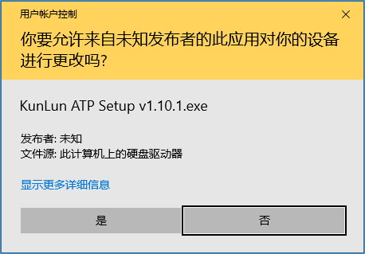
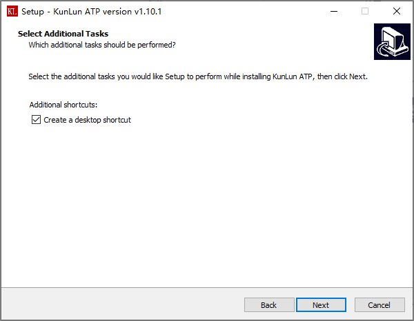
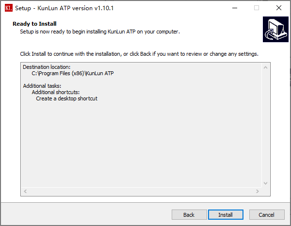
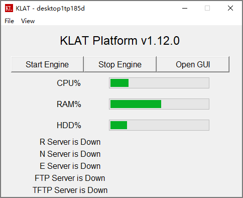

安装指南¶
操作系统要求¶
平台要求安装在Windows 10操作系统。暂不支持Linux操作系统。
安装过程说明¶
下载安装包，右键以管理员权限安装，安装过程如以下所示：
安装目录必须为: C:\Program Files (x86)\KunLun ATP ，不要修改默认设置。
选择创建桌面快捷方式。
 
选择启动应用程序，点击Finish按钮，按照完成。
安装完成后，平台将在桌面自动创建快捷方式，方便快速启用平台管理面板。
平台管理面板¶
双击桌面快捷方式，打开平台管理面板。
当平台启动后，管理平台面板将监控服务的运行状态。
管理面板的功能说明如下：
1. 点击 Start Engine 按钮，启动平台服务。启动过程中，若出现请求权限的弹窗，需选择 允许 或是 同意 。
当 R Server , N Server 与 E Server 的状态都为 running 时，平台服务成功启动。
需要说明的是，只有当用户配置了 FTP服务 或是 TFTP服务 时, FTP Server 与 TFTP Server 才会启动。
点击
Stop Engine按钮，关闭平台所有服务，当所有Server的状态都为 down 时，平台服务成功停止。
3. 点击 Open GUI 按钮，将自动打开浏览器，并导航至 https://localhost 地址。
平台要求测试主机使用 Google Chrome 浏览器（88版本或以上）或者是 Edge 浏览器。
点击菜单栏
File，选择Exit后可以退出管理界面。点击菜单栏
View，选择KL Event后可以查看平台加载hostname.py时产生的事件错误日志。